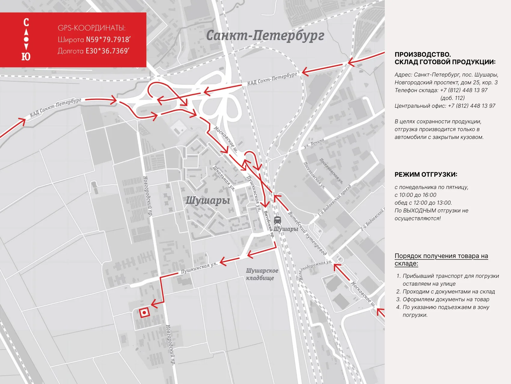

Доставка, отгрузка, приёмка
Доставляем нашу мебель в любой город по России и СНГ. Организуем перевозку, страховку и ответственность за сохранность до прибытия в вашу лабораторию. Если в пути возникнут повреждения, мы бесплатно доставим и заменим поврежденные детали или изделие целиком.
Благодаря разборной конструкции мебель занимает небольшой объём, что сокращает стоимость доставки. Точная стоимость и срок доставки будет указан в КП. Пришлите заявку на info@simple-pro.com
Расчёт срока доставки
Узнать ориентировочный срок доставки можно, выбрав свой город в списке.
Правила отгрузки товара со склада и приёмки покупателем
Отгрузка товара со склада
Отгрузка товара осуществляется юридическим лицам — при наличии доверенности, паспорта и печати организации. Физическим лицам — при наличии паспорта.
Отгрузка товара представителю транспортной компании, заказанной Покупателем, осуществляется на условиях самовывоза.
Отгрузка товара самовывозом со склада «СпецБалтМебель»:
- Самовывоз со склада «СпецБалтМебель» осуществляется представителю транспортной компании, заказанной «СпецБалтМебель» или представителю транспортной компании, заказанной Покупателем.
- Отгрузка производится по адресу: г. Санкт-Петербург, пос. Шушары, Новгородский пр. 25 к 3.
- Режим отгрузки: с понедельника по пятницу, с 10:00 до 16:00, обед с 12:30 до 13:00. По выходным отгрузки не осуществляются.
- Подача груза осуществляется только на борт автотранспортного средства. Распределение, установка, закрепление груза в кузове осуществляется силами водителя, перевозчика или экспедитора.
Отгрузка товара наёмным транспортом:
- Дату и время доставки Покупатель согласовывает с отделом логистики.
- Доставка осуществляется до подъезда указанного при оформлении заказа адреса. Приём-передача товара осуществляется у автотранспорта Перевозчика. Выгрузка, подъём на этаж, сборка и прочее не входит в услугу доставки и осуществляется силами и за счёт покупателя.
- Время ожидания водителем-экспедитором Покупателя по адресу доставки составляет не более 20 минут. Повторная доставка товара Покупателю (вне зависимости от суммы заказа) оплачивается Покупателем повторно.
Приёмка товара покупателем
При получении товара Покупатель должен проверить соответствие маркировки и количество получаемого товара по накладной, а также осмотреть целостность упаковки Товара. В случае выявления несоответствий — составить коммерческий акт в присутствии представителя транспортной компании.
Обратите внимание
- «СпецБалтМебель» рекомендует в целях сохранности груза через транспортную компанию заказывать дополнительную упаковку. С перечнем товара, подлежащего обязательной дополнительной упаковке, и её стоимостью можно ознакомиться ниже.
- «СпецБалтМебель» не оказывает услуги по изготовлению дополнительной упаковки и ответственности за изготовленную в транспортной компании дополнительную упаковку не несёт.
- Переход прав собственности осуществляется в момент передачи товара Покупателю (получателю, экспедитору, представителю). Товар, соответствующий требованиям ГОСТов и/или ТУ, возврату и обмену не подлежит.
Вам также может понадобиться
Перечень изделий, подлежащих дополнительной обрешётке
Шкафы лабораторные (из ЛДСП)
- Шкаф для реактивов ЛК-400 ШР, ЛК-800 ШР
- Шкаф для лабораторной посуды ЛК-400 ШЛП, ЛК-800 ШЛП
- Шкаф для приборов ЛК-400 ШП, ЛК-800 ШП
- Шкаф гардеробный ЛК-400 ШГ, ЛК-800 ШГ
- Шкаф для документов офисный ЛК-400 ШДО, ЛК-800 ШДО
- Шкаф для реактивов кислостойкий ЛК-600 ШРП
Тумбы подвесные
- Тумба подвесная ЛК-900 ТД (ТД-П)
- Тумба подвесная ЛК-1200 ТД (ТД-П)
- Тумба подвесная ЛК-1500 ТД (ТД-П)
- Тумба подвесная ЛК-1800 ТД (ТД-П)
Мойки
- Мойка ЛК-600 СМС (СМС-Г, СМС-ПВ)
- Мойка ЛК-800 СМС
- Мойка ЛК-900 (СМС-Г, СМС-ПВ)
- Мойка ЛК-1200 СМС (СМС-Г, СМС-ПВ)
- Мойка ЛК-1500 СМС-Г (СМС-ПВ)
Шкафы навесные
- Шкаф навесной ЛК-900 ШН
- Шкаф навесной ЛК-1200 ШН
- Шкаф навесной ЛК-1500 ШН
- Шкаф навесной ЛК-1800 ШН
Столы лабораторные
- Стол лабораторный 900 СЛ-Т
- Стол лабораторный 1200 СЛ-Т
Стулья лабораторные
- ТЕКО
Стеллажи металлические СТ-12, СТ-13
Обрешётка перечисленных изделий заказывается в случае отправки груза непрямой машиной (сборным грузом) через транспортные компании.
В случае отправки груза прямой машиной или контейнером дополнительная обрешётка не производится.
Изделия из металла и полипропилена также не нуждаются в доп. упаковке, так как уже идут в ящиках из ДСП.
Карта проезда
